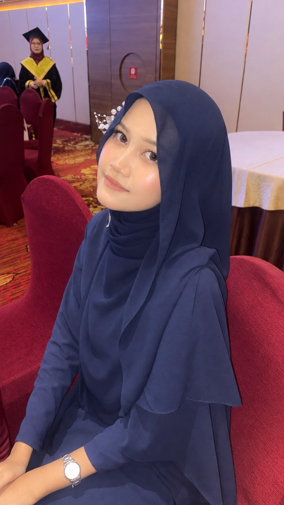
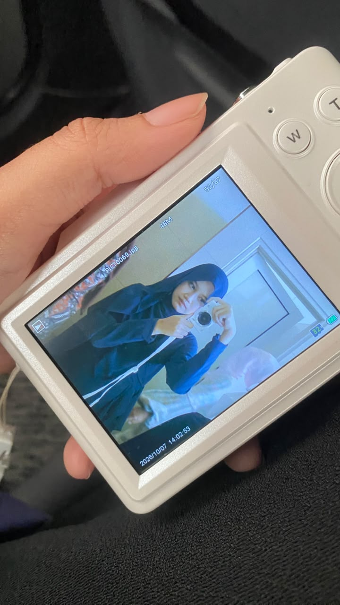
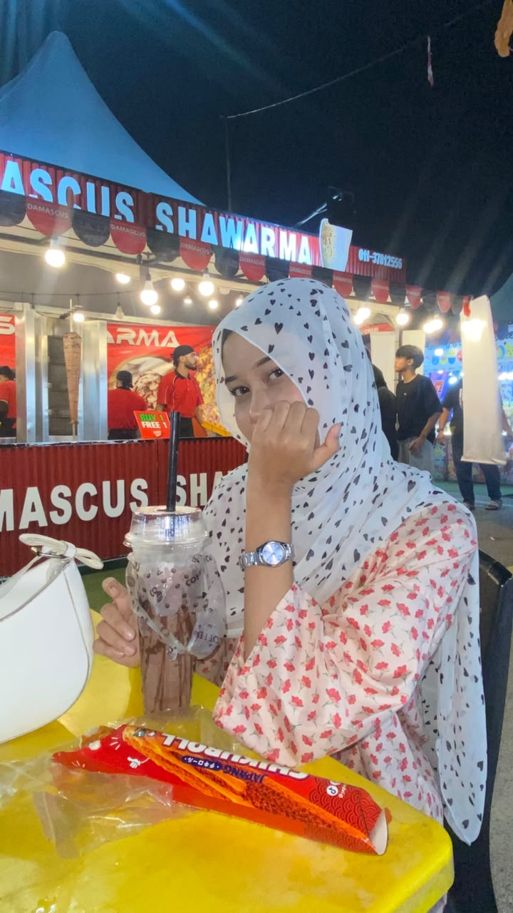

.
💌
Untuk Nia<3
haiii you, hihihi i nak cakap sikit, you ada fikir yang kita akan lost contactkan? hahaha jangan laa fikir benda - benda negatif, fikir je yang positif. I akan berusaha untuk fahamkan apa masalah yang you tengah hadap, sekurang - kurangnya saya dapat tolong awak sikit. If kalau tiba - tiba kita lost contact, anggap je la yang pertemuan kita ni mesti ada sebab, jangan salahkan diri you okay?? Inshaallah I try rapat dengan you and tak tinggalkan you. I can't to promise about this, sebab apa - apa masalah boleh je terjadi. Kita tak dapat nak menjangka yang benda tu akan jadi. Jadinya i try to be your favourite person🙇🤍. So tu je hihihi, babaiiiiii lopyuu🤍
Daripada Nabil ❤️

.

.